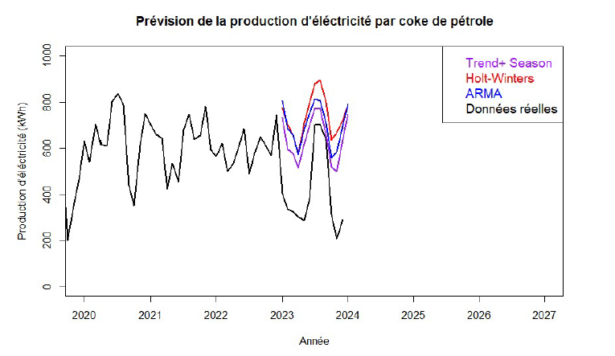

Le but de ce projet était de comparer différentes techniques de prévisions de données temporelles sur la production d'électricité par le coke de pétrole aux États-Unis, puis de les comparer à des données réelles afin de voir laquelle avait le mieux prédit la série. Les techniques utilisées étaient : la prévision par estimation de tendance + coefficients saisonniers, la méthode de Holt-Winters et la méthode ARMA :
